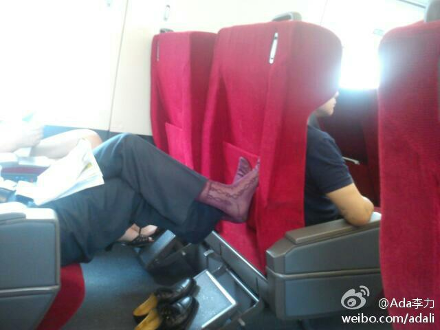

公司有几拨志愿者活动? 我报名的是陪智障学校孩子参观公司和看<蓝精灵>电影, 还不知道能否入选.@那个水手在路上:今天参加了公司的志愿者活动，陪进京的农民工孩子去世界公园。九八年大二那年，在小G@西北的猪娃娃 的邀请下我第一次来北京，那年暑假走了北京很多地方，其中就有世界公园。一晃，又十三年了。
这招好, 就是有点可惜一罐可乐, 还需要些演技. [呵呵] //@眼筝筝:偶们家老爸二十年前就教导过我怎么在火车上处理这种情况： 一罐可乐不小心就打翻在臭脚上， 所谓 accidently on purpose...@Ada李力:最讨厌乘车时有人脱鞋。有次在飞机上被某个不知来源的臭脚味都快被熏吐了。火车上这类现象更常见。 

 网页链接
网页链接